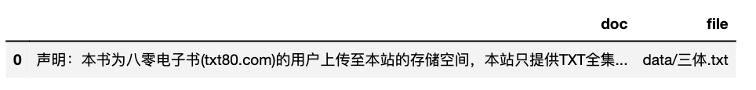

一、IO模块¶
模块 |
函数 |
功能 |
|---|---|---|
io |
ct.get_dict_list() |
查看cntext内置词典 |
io |
ct.read_yaml_dict(yfile) |
读取内置yaml词典 |
io |
ct.detect_encoding(file, num_lines=100) |
诊断txt、csv编码格式 |
io |
ct.get_files(fformat) |
查看符合fformat路径规则的所有的文件 |
io |
ct.read_yaml_dict(yfile) |
读取内置yaml词典 |
io |
ct.read_pdf(file) |
读取PDF文件 |
io |
ct.read_file(file, encoding) |
读取文件 |
io |
ct.read_files(fformat, encoding) |
读取符合fformat路径规则的所有的文件，返回df |
io |
ct.extract_mda(text, kws_pattern) |
提取A股年报中的MD&A文本内容。如果返回'',则提取失败。 |
io |
ct.traditional2simple(text) |
繁体转简体 |
io |
ct.fix_text(text) |
将不正常的、混乱编码的文本转化为正常的文本。例如全角转半角 |
io |
ct.fix_contractions(text) |
英文缩写(含俚语表达)处理， 如you're -> you are |
1.1 get_dict_list()¶
查看cntext内置词典
import cntext as ct
ct.get_dict_list()
Run
['zh_common_NTUSD.yaml',
'zh_common_DUTIR.yaml',
'enzh_common_StopWords.yaml',
'en_valence_Concreteness.yaml',
'en_common_LoughranMcDonald.yaml',
'zh_common_FinanceSenti.yaml',
'zh_common_FLS.yaml',
'zh_common_TsinghuaPraiseDegrade.yaml',
'zh_common_FEPU.yaml',
'en_common_ANEW.yaml',
'en_common_NRC.yaml',
'zh_valence_ChineseEmoBank.yaml',
'zh_valence_SixSemanticDimensionDatabase.yaml',
'zh_common_FinacialFormalUnformal.yaml',
'zh_common_LoughranMcDonald.yaml',
'enzh_common_AdvConj.yaml',
'en_common_SentiWS.yaml',
'zh_common_Digitalization.yaml',
'en_common_LSD2015.yaml',
'zh_common_HowNet.yaml',
'zh_common_EPU.yaml']
1.2 内置yaml词典¶
pkl文件 |
词典 |
语言 |
功能 |
|---|---|---|---|
zh_valence_ChineseEmoBank.yaml |
中文情感词典，含 |
Chinese |
|
zh_common_DUTIR.yaml |
大连理工大学情感本体库 |
中文 |
七大类情绪， |
zh_common_HowNet.yaml |
知网Hownet词典 |
中文 |
正面词、负面词 |
en_common_SentiWS.yaml |
SentimentWortschatz (SentiWS) |
德文 |
正面词、负面词； |
zh_common_FinacialFormalUnformal.yaml |
金融领域正式、非正式；积极消极 |
中文 |
formal-pos、 |
en_common_ANEW.yaml |
英语单词的情感规范Affective Norms for English Words (ANEW) |
英文 |
pleasure, arousal, dominance |
en_common_LSD2015.yaml |
Lexicoder Sentiment Dictionary (2015) |
英文 |
正面词、负面词 |
en_common_NRC.yaml |
NRC Word-Emotion Association Lexicon |
英文 |
细粒度情绪词； |
zh_valence_SixSemanticDimensionDatabase.yaml |
通用中英文六维语义情感词典, 含17940个中文词的六维度词库， 且每个维度有权重。 |
中文 |
vision、socialness、emotion、time、space、motor |
enzh_common_AdvConj.yaml |
副词连词 |
中、英 |
|
enzh_common_StopWords.yaml |
中英文停用词 |
中、英 |
停用词 |
en_valence_Concreteness.yaml |
English |
word & concreateness score |
|
zh_common_LoughranMcDonald.yaml |
中文LoughranMcDonald词典 |
中文 |
正面、负面词 |
zh_common_Digitalization.yaml |
中文 |
含人工智能技术、大数据技术、云计算技术、区块链技术、数字技术应用等关键词列表。 |
|
en_common_LoughranMcDonald.yaml |
英文LoughranMcDonald词典 |
英文 |
金融LM情绪词典2018年版本，含七个词表，分别是Negative, Positive, Uncertainty, Litigious, StrongModal, WeakModal, Constraining |
zh_common_FLS.yaml |
中文 |
含174个词语 |
|
zh_common_RhetoricalNationalism.yaml |
修辞民族主义 |
中文 |
含四个维度，民族自豪感、民族复兴、企业角色、排外主义，每个维度100个词。 |
1.3 read_dict_yaml()¶
使用 cntext 读取 .yaml 词典文件； 返回的信息包括
Name 词典的名字
Desc 词典的含义、概念解释
Refer 词典文献出处
Category 词典Dictionary的关键词
Dictionary 词典, python字典格式
import cntext as ct
print(ct.read_yaml_dict('zh_common_Digitalization.yaml'))
Run
{'Name': '中文数字化词典',
'Desc': '基于这篇论文，构建了中文数字化词典，含人工智能技术、大数据技术、云计算技术、区块链技术、数字技术应用等关键词列表。 ', 'Refer': '吴非,胡慧芷,林慧妍,任晓怡. 企业数字化转型与资本市场表现——来自股票流动性的经验证据[J]. 管理世界,2021,37(07):130-144+10.',
'Category': ['Artificial_Intelligence', 'Big_Data', 'Cloud_Computing', 'Block_Chains', 'Usage_of_Digitalization'],
'Dictionary':
{'Artificial_Intelligence': ['人工智能', '商业智能', '图像理解', '投资决策辅助系统', '智能数据分析', '智能机器人', '机器学习', '深度学习', '语义搜索', '生物识别技术', '人脸识别', '语音识别', '身份验证', '自动驾驶', '自然语言处理'],
'Big_Data': ['大数据', '数据挖掘', '文本挖掘', '数据可视化', '异构数据', '征信', '增强现实', '混合现实', '虚拟现实'],
'Cloud_Computing': ['云计算', '流计算', '图计算', '内存计算', '多方安全计算', '类脑计算', '绿色计算', '认知计算', '融合架构', '亿级并发', 'EB级存储', '物联网', '信息物理系统'],
'Block_Chains': ['区块链', '数字货币', '分布式计算', '差分隐私技术', '智能金融合约'],
'Usage_of_Digitalization': ['移动互联网', '工业互联网', '移动互联', '互联网医疗', '电子商务', '移动支付', '第三方支付', 'NFC支付', '智能能源', 'B2B', 'B2C', 'C2B', 'C2C', 'O2O', '网联', '智能穿戴', '智慧农业', '智能交通', '智能医疗', '智能客服', '智能家居', '智能投顾', '智能文旅', '智能环保', '智能电网', '智能营销', '数字营销', '无人零售', '互联网金融', '数字金融', 'Fintech', '金融科技', '量化金融', '开放银行']}}
1.4 detect_encoding()¶
通过读取前num_lines来识别txt/csv文件的编码格式
ct.detect_encoding(file)
file 文件路径
import cntext as ct
# 读取data文件夹下的「三体.txt」
# 识别编码方式
ct.detect_encoding(file='data/三体.txt')
Run
utf-8
1.5 get_files(fformat)¶
fformat fformat格式支持 txt/pdf/docx/xlsx/csv等。
*表示通配符
查看符合fformat路径规则的所有的文件， fformat格式支持 txt/pdf/docx/xlsx/csv等。 *表示通配符
fformat格式 |
识别的文件 |
|---|---|
|
匹配当前代码所在路径内的所有txt |
|
匹配当前代码所在路径内的所有pdf |
|
匹配「文件夹data」内所有的 txt |
# 查看「文件夹data」内所有的 txt文件。
ct.get_files(fformat='data/*.txt')
Run
['data/三体.txt',
'data/santi.txt',
'data/w2v_corpus.txt',
'data/sopmi_corpus.txt',
'data/brown_corpus.txt',
'data/sopmi_seed_words.txt']
1.6 read_pdf¶
读取PDF，返回文本内容
ct.read_pdf(file)
file PDF文件路径
点击 格力电器2023.pdf
import cntext as ct
text = ct.read_pdf('格力电器2023.pdf')
print(text)
Run
珠海格力电器股份有限公司 2023年年度报告全文
珠海格力电器股份有限公司
2023年年度报告
二〇二四年四月
珠海格力电器股份有限公司 2023年年度报告全文
第 2 页 共 249 页 第一节 重要提示、目录和释义
公司董事会、监事会及董事、监事、高级管理人员保证年度报告内容
的真实、准确、完整，不存在虚假记载、误导性陈述或重大遗漏，并承担
个别和连带的法律
......
1.7 read_docx¶
读取docx，返回文本内容
ct.read_docx(file)
file docx文件路径
import cntext as ct
text = ct.read_docx('test.docx')
text
Run
这是来自test.docx里内容
1.8 read_file()¶
读取文件，返回文本内容
ct.read_file(file, encoding='utf-8')
file 待读取的文件路径； 支持txt、pdf、docx、xlsx、xls， 返回 DataFrame(含doc和file两个字段)。
encoding 待读取文件的编码方式
以 data/三体.txt 为例
import cntext as ct
# 默认encoding='utf-8'
# sdf = ct.read_file(file='data/三体.txt')
sdf = ct.read_file(file='data/三体.txt', encoding='utf-8')
sdf

1.9 read_files()¶
ct.read_files(fformat, encoding='utf-8'）
批量读取符合fformat格式的所有文件数据，返回DataFrame(含doc和file两个字段)。
读取[文件夹data里所有txt]
import cntext as ct
# 默认encoding='utf-8'
# ddf = ct.read_files(fformat='data/*.txt')
ddf = ct.read_files(fformat='data/*.txt', encoding='utf-8')
ddf

1.10 extract_mda¶
提取A股年报中的MD&A文本内容。如果返回'',则提取失败。
ct.extract_mda(text, kws_pattern='')
text 中国A股年报原始文本
kws_pattern 管理层讨论与分析章节识别关键词的模板。cntext内置的kws_pattern内容如下
kws_pattern = '董事会报告|董事会报告与管理讨论|企业运营与管理评述|经营总结与分析|管理层评估与未来展望|董事局报告|管理层讨论与分析|经营情况讨论与分析|经营业绩分析|业务回顾与展望|公司经营分析|管理层评论与分析|执行摘要与业务回顾|业务运营分析'
import cntext as ct
text = ct.read_pdf('格力电器2023.pdf')
mda_text = ct.extract_mda(text)
print(mda_text)
Run
'管理层讨论与分析 \n一、报告期内公司所处行业情况 \n（一）行业发展现状 \n1.消费领域 ——家电行业稳定增长，空调市场恢复明显 \n2023年，中国经济保持了整体恢复向好的态势，激发消费是稳增长的重中之重。国家鼓励和推动消费品以旧换\n新，促进消费经济大循环，加速更新需求释放，推动高能效产品设备销售和出口增长，进一步激发绿色消费潜力。 \n1）家电行业稳定增长 \n2023年，国内经济恢复明显，家电行业稳定增长。根据全国家用电器工业信息中心发布的《 2023年中国家电\n行业年度报告》，家电行业外销明显增长，出口规模为 6,174亿元，同比增长 9.9%；国内市场实现稳步增长，销售\n规模为7'
.......
.......
以2001年~2023会计年度报告数据集为例， 查看 extract_mda 的抽取mda的能力。
import glob
import cntext as ct
print('extract_mda识别能力')
for year in range(2001, 2024):
num = 0
for file in glob.glob(f'年报txt/{year}/*.txt'):
mda_text = ct.extract_mda(open(file).read())
if mda_text!='':
num = num + 1
volume = len(glob.glob(f'年报txt/{year}/*.txt'))
ratio = num/volume
print(f'{year}: {ratio:.2f}')
Run
2001: 0.24
2002: 0.37
2003: 0.43
2004: 0.70
2005: 0.77
2006: 0.78
2007: 0.79
2008: 0.77
2009: 0.79
2010: 0.82
2011: 0.84
2012: 0.96
2013: 0.95
2014: 0.98
2015: 0.98
2016: 0.99
2017: 0.98
2018: 0.98
2019: 0.99
2020: 0.97
2021: 0.98
2022: 0.99
2023: 0.99
建议各位用最近10年的年报数据，通过extract_mda提取mda文本，或者直接购买 [数据集 | 2001-2023年A股上市公司年报&管理层讨论与分析](数据集 | 2001-2023年A股上市公司年报&管理层讨论与分析)
1.11 traditional2simple()¶
繁体转简体
ct.traditional2simple(text, mode='t2s')
text 待转换的文本
mode 转换模式， 默认mode='t2s'繁转简; mode还支持s2t
import cntext as ct
text = '簡體漢字'
ct.traditional2simple(text)
Run
'简体汉字'
text = '简体汉字'
ct.traditional2simple(text, mode='s2t')
Run
'簡體漢字'
1.12 fix_text()¶
将不正常的、混乱编码的文本转化为正常的文本。例如全角转半角
import cntext as ct
raw_text = '今日起可中遇到技术问题，可以拨打电话０３７１－６６３２１９９１、６６３２１９７３咨询。'
text = ct.fix_text(raw_text)
text
Run
今日起可中遇到技术问题，可以拨打电话0371-66321991、66321973咨询。
1.13 fix_contractions(text)¶
将英文缩写(含俚语表达)转化为完整的表达，如如
- you're -> you are
- yall -> you all
- gotta -> got to
...
import cntext as ct
raw_text = "yall're happy now"
text = ct.fix_contractions(raw_text)
text
Run
"you all are happy now"